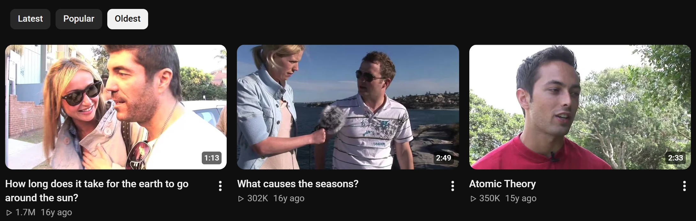
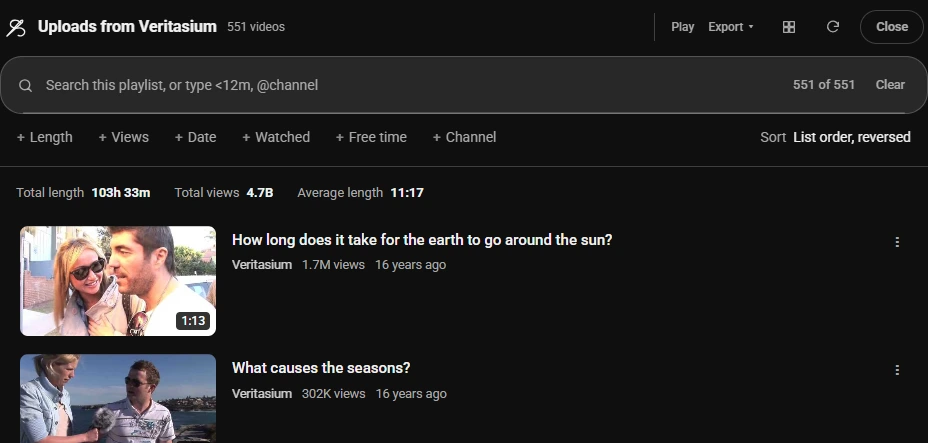

Guide 24·Channels
How to find a YouTube channel's first video.
Updated 19 November 2026
Short answer
Open the channel's Videos tab and pick Oldest in the chips above the grid. The first video is its oldest regular upload. That leaves out Shorts and past live streams, which have tabs of their own, so for the very first thing a channel posted, open its uploads playlist, which has everything, and turn it round with Needle, a free Chrome extension.
01·On YouTube
Sort the Videos tab by Oldest
- Open the channel and go to its Videos tab.
- In the chips above the grid, pick Oldest.

On channels that have members-only videos the chips look different: Latest is a menu with Popular and Oldest in it, beside Members only and Public. Same sort, one click deeper.
02·Tabs
What Oldest leaves out
- Shorts and live streams. They have their own tabs, each with its own Latest, Popular and Oldest. A channel that started out streaming, or with Shorts, has its real first upload there.
- Deleted and private videos. Gone from every tab. What Oldest shows is the oldest one still up.
- What the channel counts as first. Veritasium's oldest upload is a 73-second video from 15 August 2010 asking how long the Earth takes to go round the Sun. The description of Atomic Theory, from January 2011, calls that one the first Veritasium science video. Tests and trailers often come before episode one.
03·Every upload
The first of everything: the uploads playlist
Every channel has a playlist YouTube doesn't link to, with every upload in it, videos, Shorts and streams together, newest first. To open it, change the UC at the start of the channel's ID to UU (step by step here). Veritasium's had 551 videos, against 453 on its Videos tab.
It isn't your playlist, so it has no sort, and its oldest upload is at the very bottom. Turn it round with Needle instead of scrolling:
- Open the uploads playlist.
- Press the needle button in the bottom right corner, or Alt+Y. Needle reads all of it.
- Set Sort to List order, reversed. The first card is the first thing the channel posted that's still up.

The uploads playlist is in upload order already, so turning it round gives the exact order they went up. Big channels have thousands of uploads: if the count looks short, raise the Video limit in Needle's settings, 1,800 by default.
04·With Needle
The early videos, filtered
On the Videos tab, Needle's panel sorts Oldest first too, and adds what the chip can't: the channel's first videos on one subject (type a word), the early ones over 20 minutes (>20m), or the early ones you've never started (unwatched). Only the unwatched ones on a channel covers that last one. A channel's videos from one year covers dates. For its biggest videos rather than its first, sort by length or by views.
05·Play in order
Watch the channel from the start
With the uploads playlist turned round, press Play: the first 50 uploads, in order, as a temporary YouTube playlist. When you've got through them, set + Watched to Not finished and press Play again for the next 50. Playing a playlist in reverse has more on that.
06·Questions
Questions?
Where's the Oldest button on a channel?
On the Videos tab, in the chips above the grid: Latest, Popular, Oldest. On channels with members-only videos those three sit in a menu under the first chip, next to Members only and Public.
Is the oldest video really the first one?
It's the oldest one still up. Videos the channel deleted or made private don't show anywhere, so a channel's very first upload can be gone for good.
Why does a channel call a different video its first?
Channels often count from their first proper episode, not their test uploads. Veritasium's oldest upload is from 15 August 2010, but the description of Atomic Theory, from January 2011, calls that one the first Veritasium science video.
What about Shorts and live streams?
Their tabs each have an Oldest chip too. The channel's uploads playlist has all three together, so turning it round finds the first of anything.
Can I watch a channel from the beginning?
Yes. Reverse the uploads playlist in Needle and press Play: the first 50 uploads in order, as a YouTube playlist. Signed in, set Watched to Not finished and press Play again for the next 50.
Does it work on my phone?
Needle doesn't: it's for YouTube in a desktop browser. On a computer, the Oldest chip needs nothing installed.
Is it free?
Yes. No account, no trial, no paid tier.